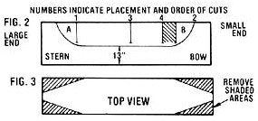

[1] Skillful hands guide the curved knife. [2] Carter finishes the rough-shaping, using a homemade elbow adz. [3] Tait resumes hollowing out the hull. [4] Earl drills depth-guide holes and . . . [5] the two men excavate the interior down to the cavities. [6] Tait and Carter plan the final shaping, which [7] is done almost entirely with Norman's self-crafted D-adz. [8] Sharp tools are a must! [9] Tait shapes a stem with the elbow adz. [10] Norman and Earl load the finished 150-pound canoe in a van, for shipping to Ottawa.